kafe reference¶
This page contains documentation which was automatically extracted from docstrings in the source code. All major classes, methods and functions provided by kafe are documented here. For further information, or if in doubt about the exact functionality, users are invited to consult the source code itself.
kafe in a nutshell¶
kafe – a Python package for fitting and plotting for use in physics lab courses.
This Python package allows fitting of user-defined functions to data. A dataset is represented by a Dataset object which stores measurement data as NumPy arrays. The uncertainties (errors) of the data are also stored in the Dataset as a list of one or more ErrorSource objects, each of which stores a part of the uncertainty information as a so-called covariance matrix (also called an error matrix). This allows kafe to work with uncertainties of different kinds for a Dataset, particularly when there is a degree of correlation between the uncertainties of the datapoints.
Fitting with kafe in a nutshell goes like this:
- create a Dataset object from your measurement data
>>> my_d = kafe.Dataset(data=[[0., 1., 2.], [1.23, 3.45, 5.62]])
- add errors (uncertainties) to your Dataset
>>> my_d.add_error_source('y', 'simple', 0.5) # y errors, all +/- 0.5
- import a model function from kafe.function_library (or define one yourself)
>>> from kafe.function_library import linear_2par
- create a Fit object from your Dataset and your model function
>>> my_f = kafe.Fit(my_d, linear_2par)
- do the fit
>>> my_f.do_fit()
- (optional) if you want to see a plot of the result, use the Plot object
>>> my_p = kafe.Plot(my_f) >>> my_p.plot_all() >>> my_p.show()
For more in-depth information on kafe‘s features, feel free to consult the documentation.
Main modules: dataset, fit and plot¶
Dataset: Collection of data points (kafe.dataset)¶
-
class
kafe.dataset.Dataset(data=None, title='Untitled Dataset', axis_labels=['x', 'y'], axis_units=['', ''], **kwargs)¶ Bases:
objectThe Dataset object is a data structure for storing measurement and error data.
It contains the measurement data as NumPy arrays and the error information as a list of
ErrorSourceobjects for each axis, each of which represents a separate contribution to the uncertainty of the measurement data, expressed as a covariance matrix.The Dataset object calculates a total covariance matrix by adding up all the individual ErrorSource covariance matrices. This total covariance matrix is the one used for fitting.
A Dataset can be constructed directly from the measurement data, and can optionally be given a title, axis labels and axis units, as well as a base name for log or output files:
>>> my_d = kafe.Dataset(data=[[0., 1., 2.], [1.23, 3.45, 5.62]])
After constructing the Dataset, an error model may be added using
add_error_source()(here, an absolute y-uncertainty of 0.5):>>> my_d.add_error_source('y', 'simple', 0.5) # y errors, all +/- 0.5
The Dataset may then be used for fitting. For more information, see the
Fitobject documentation.Keyword Arguments: data (iterable, optional) – the measurement data. Either of the form (xdata, ydata) or [(x1, y1), (x2, y2),... (xn, yn)]
title (string, optional) – the name of the Dataset. If omitted, the Dataset will be given the generic name ‘Untitled Dataset’.
axis_labels (list of strings, optional) –
labels for the x and y axes. If omitted, these will be set to
'x'and'y', respectively.axis_units (list of strings, optional) –
units for the x and y axes. If omitted, these will be assumed to be dimensionless, i.e. the unit will be an empty string.
basename (string) –
base name of files generated by this Dataset/subsequent Fits...
-
add_error_source(axis, err_type, err_val, relative=False, correlated=False, recompute_cov_mat=True)¶ Add an error source for the data. A Dataset can have many error sources for each axis, each corresponding to a covariance matrix. The total error model for the axis is represented by the sum of these matrices.
Note: whenever an ErrorSource is added, the total covariance matrix is (re-)calculated, unless recompute_cov_mat is
False.Parameters: - axis (
'x'or'y') – axis for which to add error source. - err_type (
'simple'or'matrix') –a
'simple'error source is constructed from a single float or a list of N floats (N being the size of the Dataset), representing the uncertainty of the corresponding data points.A
'matrix'error source is a user-constructed covariance matrix. - err_val (float/list of floats or numpy.matrix) –
for a
'simple'error source, a float of a list of N floats (N being the size of the Dataset). The float/each float in the list represents the uncertainty of the corresponding data point.For a
'matrix'error source, the user-constructed covariance matrix (type: numpy.matrix).
Keyword Arguments: - relative (boolean, optional, default
False) – errors relative to the data (True) or absolute (False). - correlated (boolean, optional, default
False) – errors fully correlated (True) or totally uncorrelated (False). - recompute_cov_mat (boolean, optional, default
True) – recalculate the total covariance matrix after adding the error source
Returns: this integer may later be used to remove or disable/enable the error source using
remove_error_source(),disable_error_source()orenable_error_source().Return type: int
- axis (
-
calc_cov_mats(axis='all')¶ (Re-)Calculate the covariance matrix from the enabled error sources.
Keyword Arguments: axis ( 'x'or'y'or'all') – axis/axes for which to (re-)calcuate covariance matrix.
-
cov_mat_is_regular(axis)¶ Returns True if the covariance matrix for an axis is regular and
Falseif it is singular.Parameters: axis ( 'x'or'y') – Axis for which to check for regularity of the covariance matrix.Returns: Trueif covariance matrix is regularReturn type: boolean
-
cov_mats= None¶ covariance matrices for axes
-
disable_error_source(axis, err_src_id)¶ Disables an ErrorSource by excluding it from the calculation of the total covariance matrix.
Parameters: - axis (
'x'or'y') – axis for which to add error source. - err_src_id (int) – error source ID, as returned by
add_error_source().
- axis (
-
enable_error_source(axis, err_src_id)¶ Enables an ErrorSource by excluding it from the calculation of the total covariance matrix.
Parameters: - axis (
'x'or'y') – axis for which to add error source. - err_src_id (int) – error source ID, as returned by
add_error_source().
- axis (
-
err_src= None¶ lists of ErrorSource objects
-
error_source_is_enabled(axis, err_src_id)¶ Returns
Trueif an ErrorSource is enabled, that is if it is included in the total covariance matrix.Parameters: - axis (
'x'or'y') – Axis for which to load the error matrix. - err_src_id (int) – error source ID, as returned by
add_error_source().
Returns: - bool – True if the specified error source is enables
- TODO (##DocString##)
- axis (
-
get_axis(axis_alias)¶ Get axis id from an alias.
Parameters: axis_alias (string or int) – Alias of the axis whose id should be returned. This is for example either '0'or'x'for the x-axis (id 0).Returns: the axis ID Return type: int
-
get_cov_mat(axis, fallback_on_singular=None)¶ Get the error matrix for an axis.
Parameters: axis ( 'x'or'y') – Axis for which to load the error matrix.Keyword Arguments: fallback_on_singular (numpy.matrix or string, optional) – What to return if the matrix is singular. If this is None(default), the matrix is returned anyway. If this is a numpy.matrix object or similar, that is returned istead. Alternatively, the shortcuts'identity'or1and'zero'or0can be used to return the identity and zero matrix respectively.Returns: the current covariance matrix Return type: numpy.matrix
-
get_data(axis)¶ Get the measurement data for an axis.
Parameters: axis (string) – Axis for which to get the measurement data. Can be 'x'or'y'.Returns: the measurement data for the axis Return type: numpy.array
-
get_data_span(axis, include_error_bars=False)¶ Get the data span for an axis. The data span is a tuple (min, max) containing the smallest and highest coordinates for an axis.
Parameters: axis ( 'x'or'y') – Axis for which to get the data span.Keyword Arguments: include_error_bars (boolean, optional) – Trueif the returned span should be enlarged to contain the error bars of the smallest and largest datapoints (default:False)Returns: the data span for the axis Return type: a tuple (min, max)
-
get_formatted(format_string='.06e', delimiter='\t')¶ Returns the dataset in a plain-text format which is human-readable and can later be used as an input file for the creation of a new Dataset.
The format is as follows:
# x data x_1 sigma_x_1 x_2 sigma_x_2 cor_x_12 ... ... ... ... x_N sigma_x_N cor_x_1N ... cor_x_NN # y data y_1 sigma_y_1 y_2 sigma_y_2 cor_y_12 ... ... ... ... y_N sigma_y_N cor_y_1N ... cor_y_NN
Here, the
x_iandy_irepresent the measurement data, thesigma_?_iare the statistical uncertainties of each data point, and thecor_?_ijare the correlation coefficients between the i-th and j-th data point.If the
xoryerrors are not correlated, then the entire correlation coefficient matrix can be omitted. If there are no statistical uncertainties for an axis, the second column can also be omitted. A blank line is required at the end of each data block!Keyword Arguments: - format_string (string, optional) –
A format string with which each entry will be rendered. Default is
'.06e', which means the numbers are represented in scientific notation with six significant digits. - delimiter (string, optional) – A delimiter used to separate columns in the output.
Returns: a plain-text representation of the Dataset
Return type: str
- format_string (string, optional) –
A format string with which each entry will be rendered. Default is
-
get_size()¶ Get the size of the Dataset. This is equivalent to the length of the x-axis data.
Returns: the number of datapoints in the Dataset. Return type: int
-
has_correlations(axis=None)¶ Returns True if the specified axis has correlation data,
Falseif not.Parameters: axis ( 'x'or'y'orNone, optional) – Axis for which to check for correlations. IfNone, returns true if there are correlations for at least one axis.Returns: True if the specified axis has correlation data Return type: bool
-
has_errors(axis=None)¶ Returns True if the specified axis has any kind of error data.
Parameters: axis ( 'x'or'y'orNone, optional) – Axis for which to check for error data. IfNone, returns true if there are errors for at least one axis.Returns: True if the specified axis has any kind of error data. Return type: bool
-
n_datapoints= None¶ number of data points in the Dataset
-
read_from_file(input_file)¶ Reads the Dataset object from a file.
One way to construct a Dataset is to specify an input file containing a plain-text representation of the dataset:
>>> my_dataset.read_from_file('/path/to/file')
or
>>> my_dataset.read_from_file(my_file_object)
For details on the format, see
get_formatted()Parameters: input_file (str) – path to the file Returns: Trueif the read succeeded,Falseif not.Return type: boolean
-
remove_error_source(axis, err_src_id, recompute_cov_mat=True)¶ Remove the error source from the Dataset.
Parameters: - axis (
'x'or'y') – axis for which to add error source. - err_src_id (int) – error source ID, as returned by
add_error_source().
Keyword Arguments: recompute_cov_mat (boolean, optional, default
True) – recalculate the total covariance matrix after removing the error source- axis (
-
set_axis_data(axis, data)¶ Set the measurement data for a single axis.
Parameters: - axis (
'x'or'y') – Axis for which to set the measurement data. - data (iterable) – Measurement data for axis.
- axis (
-
set_cov_mat(axis, mat)¶ Forcibly set the error matrix for an axis, ignoring
ErrorSourceobjects. This is useful for adjusting the covariance matrix during the fit process.Parameters: - axis (
'x'or'y') – Axis for which to load the error matrix. - mat (numpy.matrix or
None) – Error matrix for the axis. PassingNoneunsets the error matrix.
- axis (
-
set_data(data)¶ Set the measurement data for both axes.
Each element of data must be iterable and be of the same length. The first element of the data tuple/list is assumed to be the x data, and the second to be the y data:
>>> my_dataset.set_data(([0., 1., 2.], [1.23, 3.45, 5.62]))
Alternatively, x-y value pairs can also be passed as data. The following is equivalent to the above:
>>> my_dataset.set_data(([0.0, 1.23], [1.0, 3.45], [2.0, 5.62]))
In case the Dataset contains two data points, the ordering is ambiguous. In this case, the first ordering (x data first, then y data) is assumed.
Parameters: data (iterable) – the measurement data. Either of the form (xdata, ydata) or [(x1, y1), (x2, y2),... (xn, yn)]
-
write_formatted(file_path, format_string='.06e', delimiter='\t')¶ Writes the dataset to a plain-text file. For details on the format, see
read_from_file().Parameters: file_path (string) – Path of the file object to write. WARNING: overwrites existing files!
Keyword Arguments: - format_string (string, optional) –
A format string with which each entry will be rendered. Default is
'.06e', which means the numbers are represented in scientific notation with six significant digits. - delimiter (string, optional) – A delimiter used to separate columns in the output.
- format_string (string, optional) –
A format string with which each entry will be rendered. Default is
-
class
kafe.dataset.ErrorSource¶ Bases:
objectThis object stores the error information for a
Datasetas a covariance matrix (sometimes also referred to as the error
matrix). This has several advantages: it allows calculating the function
to minimize (e.g. the chi-square) for a fit as a matrix product, and it
allows specifying multiple error sources for a Dataset by simply adding
up the corresponding matrices.
(sometimes also referred to as the error
matrix). This has several advantages: it allows calculating the function
to minimize (e.g. the chi-square) for a fit as a matrix product, and it
allows specifying multiple error sources for a Dataset by simply adding
up the corresponding matrices.The object contains methods to generate a covariance matrix for some simple cases, such as when all points have the same relative or absolute errors and the errors are either not correlated or fully correlated. For more complicated error models, a covariance matrix can be specified directly.
-
get_matrix(size=None)¶ Returns/Generates the covariance matrix for this ErrorSource.
If the user specified the matrix using
make_from_matrix(), returns that matrix. If a simple error model is specified, a matrix is constructed as follows:For uncorrelated errors, the covariance matrix is always diagonal.
If a single float
 is given as the error, the diagonal
entries will be equal to
is given as the error, the diagonal
entries will be equal to  . In this case, the matrix
size needs to be specified via the
. In this case, the matrix
size needs to be specified via the sizeparameter.If a list of floats
 is given as the error, the
i-th entry will be equal to 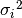. In this case,
the size of the matrix is inferred from the size of the list.
is given as the error, the
i-th entry will be equal to 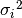. In this case,
the size of the matrix is inferred from the size of the list.For fully correlated errors, the covariance matrix is the outer product of the error array
with itself, i.e. the
 -th matrix entry will be equal to
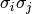.
-th matrix entry will be equal to
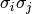.Keyword Arguments: size (int (sometimes required)) – Size of the matrix to return. Only relevant if the error value is a single float, since in that case there is no way to deduce the matrix size.
-
make_from_matrix(cov_mat, check_singular=False)¶ Sets the covariance matrix manually.
Parameters: cov_mat (numpy.matrix) – A square, symmetric (and usually regular) matrix. Keyword Arguments: check_singular (boolean, optional) – Whether to force singularity check. Defaults to False.
-
make_from_val(err_val, fully_correlated=False)¶ Sets information required to construct the covariance matrix.
Parameters: err_val (float or sequence of floats) – If all data points have the same uncertainty Keyword Arguments: fully_correlated (boolean, optional) – Whether the errors are fully correlated. Defaults to False.
-
Fit: Fit of model functions to a Dataset (kafe.fit)¶
-
kafe.fit.CL2Chi2(CL)¶ Helper function to calculate DeltaChi2 from confidence level CL
-
kafe.fit.Chi22CL(dc2)¶ Helper function to calculate confidence level CL from DeltaChi2
-
class
kafe.fit.Fit(dataset, fit_function, external_fcn=<function chi2>, fit_name=None, fit_label=None, minimizer_to_use='iminuit')¶ Bases:
objectObject representing a fit. This object references the fitted Dataset, the fit function and the resulting fit parameters.
Necessary arguments are a Dataset object and a fit function (which should be fitted to the Dataset). Optionally, an external function FCN (the minimum of which should be located to find the best fit) can be specified. If not given, the FCN function defaults to
 .
.Parameters: - dataset (Dataset) – A Dataset object containing all information about the data
- fit_function (function) –
A user-defined Python function to fit to the data. This function’s first argument must be the independent variable x. All other arguments must be named and have default values given. These defaults are used as a starting point for the actual minimization. For example, a simple linear function would be defined like:
>>> def linear_2par(x, slope=1., y_intercept=0.): ... return slope * x + y_intercept
Be aware that choosing sensible initial values for the parameters is often crucial for a succesful fit, particularly for functions of many parameters.
Keyword Arguments: external_fcn (function, optional) – An external FCN (function to minimize). This function must have the following call signature:
>>> FCN(xdata, ydata, cov_mat, fit_function, parameter_values)
It should return a float. If not specified, the default
FCN is used. This should be sufficient for most fits.fit_name (string, optional) – An ASCII name for this fit. This is used as a label for the the matplotlib figure window and for naming the fit output file. If omitted, the fit will take over the name of the parent dataset.
fit_label (
 -formatted string, optional) –
A name/label/short description of the fit function. This appears in the
legend describing the fitter curve. If omitted, this defaults to the
fit function’s expression.
-formatted string, optional) –
A name/label/short description of the fit function. This appears in the
legend describing the fitter curve. If omitted, this defaults to the
fit function’s expression.minimizer_to_use (‘ROOT’ or ‘minuit’, optional) – Which minimizer to use. This defaults to whatever is set in the config file, but can be specifically overridden for some fits using this keyword argument
-
call_external_fcn(*parameter_values)¶ Wrapper for the external FCN. Since the actual fit process depends on finding the right parameter values and keeping everything else constant we can use the Dataset object to pass known, fixed information to the external FCN, varying only the parameter values.
Parameters: parameter_values (sequence of values) – the parameter values at which FCN is to be evaluated
-
call_minimizer(final_fit=True, verbose=False, quiet=False)¶ Instructs the minimizer to do a minimization.
-
constrain_parameters(parameters, parvals, parerrs, cor_mat=None)¶ Constrain the parameter with the given name to
 .
This is achieved by adding an appropriate penalty term to the
function, see function
.
This is achieved by adding an appropriate penalty term to the
function, see function chi2().Parameters: - parameters (list of int) – list of paramter id’s or names to constrain
- parvals (list of float) – list of parameter values
- parerrs (list of float) – list of errors on parameters
Keyword Arguments: **cor_mat** (numpy.matrix optional) – correlation matrix of the parameters
-
contours= None¶ Parameter Contours [id1, id2, dchi2, [xc], [yc]]
-
current_cov_mat= None¶ the current covariance matrix used for the Fit
-
dataset= None¶ this Fit instance’s child Dataset
-
do_fit(quiet=False, verbose=False)¶ Runs the fit algorithm for this Fit object.
First, the
Datasetis fitted considering only uncertainties in the y direction. If the Dataset has no uncertainties in the y direction, they are assumed to be equal to 1.0 for this preliminary fit, as there is no better information available.Next, the fit errors in the x direction (if they exist) are taken into account by projecting the covariance matrix for the x errors onto the y covariance matrix. This is done by taking the first derivative of the fit function in each point and “projecting” the x error onto the resulting tangent to the curve.
This last step is repeated until the change in the error matrix caused by the projection becomes negligible.
Keyword Arguments: - quiet (boolean, optional) –
Set to
Trueif no output should be printed. - verbose (boolean, optional) –
Set to
Trueif more output should be printed.
- quiet (boolean, optional) –
Set to
-
external_fcn= None¶ the (external) function to be minimized for this Fit
-
final_fcn= None¶ Final minimum of fcn (chi2)
-
final_parameter_errors= None¶ Final parameter errors
-
final_parameter_values= None¶ Final parameter values
-
fit_function= None¶ the fit function used for this Fit
-
fix_parameters(*parameters_to_fix)¶ Fix the given parameters so that the minimizer works without them when
do_fit()is called next. Parameters can be given by their names or by their IDs.
-
get_current_fit_function()¶ This method returns a function object corresponding to the fit function for the current parameter values. The returned function is a function of a single variable.
Returns: A function of a single variable corresponding to the fit function at the current parameter values. Return type: function handle
-
get_error_matrix()¶ This method returns the covariance matrix of the fit parameters which is obtained by querying the minimizer object for this Fit
Returns: The covariance matrix of the parameters. Return type: numpy.matrix
-
get_function_error(x)¶ This method uses the parameter error matrix of the fit to calculate a symmetric (parabolic) error on the function value itself. Note that this method takes the entire parameter error matrix into account, so that it also accounts for correlations.
The method is useful if, e.g., you want to draw a confidence band around the function in your plot routine.
Parameters: x (float or sequence of float) – the values at which the function error is to be estimated Returns: the estimated error at the given point(s) Return type: float or sequence of float
-
get_parameter_errors(rounding=False)¶ Get the current parameter uncertainties from the minimizer.
Keyword Arguments: rounding (boolean, optional) – Whether or not to round the returned values to significance. Returns: A tuple of the parameter uncertainties Return type: tuple
-
get_parameter_values(rounding=False)¶ Get the current parameter values from the minimizer.
Keyword Arguments: rounding (boolean, optional) – Whether or not to round the returned values to significance. Returns: A tuple of the parameter values Return type: tuple
-
get_results()¶ Return results from Fit
-
latex_parameter_names= None¶ - parameter names
-
minos_errors= None¶ MINOS Errors [err, err+, err-, gcor]
-
number_of_parameters= None¶ the total number of parameters
-
par_cov_mat= None¶ Parameter covariance matrix (numpy.matrix)
-
parabolic_errors= None¶ Trueif is approx. parabolic (boolean)
-
parameter_is_fixed(parameter)¶ Check whether a parameter is fixed. Accepts a parameter’s name or ID and returns a boolean value.
-
parameter_names= None¶ the names of the parameters
-
plot_contour(parameter1, parameter2, dchi2=2.3, n_points=100, color='gray', alpha=0.1, show=False, axes=None)¶ Plots one or more two-dimensional contours for this fit into a separate figure and returns the figure object.
Parameters: - parameter1 (int or string) – ID or name of the parameter to appear on the x-axis.
- parameter2 (int or string) – ID or name of the parameter to appear on the y-axis.
Keyword Arguments: - dchi2 (float or list of floats (otpional)) – delta-chi^2 value(s) used to evaluate contour(s) 1. = 1 sigma 2.3 = 68.0% (default) 4. = 2 sigma 5.99 = 95.0%
- n_points (int, optional) – Number of plot points to use for the contour. Higher values yield smoother contours but take longer to render. Default is 100.
- color (string, optional) –
A
matplotlibcolor identifier specifying the fill color of the contour. Default is ‘gray’. - alpha (float, optional) – Transparency of the contour fill color ranging from 0. (fully transparent) to 1. (fully opaque). Default is 0.25
- show (boolean, optional) –
Specify whether to show the figure before returning it. Defaults
to
False. - axes (maplotlib.pyplot.axes) – Sub-plot axes to add plot to
Returns: A figure object containing the contour plot.
Return type: matplotlibfigure object if no axes given
-
plot_correlations()¶ Plots two-dimensional contours for all pairs of parameters and profile for all parameters, arranges as a matrix.
Returns: A figure object containing the matrix of plots. Return type: matplotlibfigure object
-
plot_profile(parid, n_points=21, color='blue', alpha=0.5, show=False, axes=None)¶ Plots a profile
 for this fit into
a separate figure and returns the figure object.
for this fit into
a separate figure and returns the figure object.Parameters: parid (int or string) – ID or name of parameter
Keyword Arguments: - n_points (int, optional) – Number of plot points to use for the profile curve.
- color (string, optional) –
A
matplotlibcolor identifier specifying the line color. Default is ‘blue’. - alpha (float, optional) – Transparency of the contour fill color ranging from 0. (fully transparent) to 1. (fully opaque). Default is 0.25
- show (boolean, optional) –
Specify whether to show the figure before returning it. Defaults
to
False. - axes (sub-plot axes to put plot)
Returns: A figure object containing the profile plot.
Return type: matplotlibfigure object if axes is None
-
print_fit_details()¶ prints some fit goodness details
-
print_fit_results()¶ prints fit results
-
print_raw_results()¶ unformatted print-out of all fit results in
-
print_rounded_fit_parameters()¶ prints the fit parameters
-
profiles= None¶ Parameter Profiles [id1, [xp], [dchi1(xp)]]
-
project_x_covariance_matrix()¶ Project elements of the x covariance matrix onto the total matrix.
This is done element-wise, according to the formula:
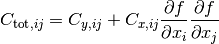
-
release_parameters(*parameters_to_release)¶ Release the given parameters so that the minimizer begins to work with them when
do_fit()is called next. Parameters can be given by their names or by their IDs. If no arguments are provied, then release all parameters.
-
set_parameters(*args, **kwargs)¶ Sets the parameter values (and optionally errors) for this fit. This is usually called just before the fit is done, to establish the initial parameters. If a parameter error is omitted, it is set to 1/10th of the parameter values themselves. If the default value of the parameter is 0, it is set, by exception, to 0.1.
This method accepts up to two positional arguments and several keyword arguments.
Parameters: - args[0] (tuple/list of floats, optional) – The first positional argument is expected to be a tuple/list containing the parameter values.
- args[1] (tuple/list of floats, optional) – The second positional argument is expected to be a tuple/list of parameter errors, which can also be set as an approximate estimate of the problem’s uncertainty.
Keyword Arguments: - no_warning (boolean, optional) –
Whether to issue warnings (
False) or not (True) when communicating with the minimizer fails. Defaults toFalse. - Valid keyword argument names are parameter names. The keyword arguments
- themselves may be floats (parameter values) or 2-tuples containing the
- parameter values and the parameter error in that order
- *<parameter_name>* (float or 2-tuple of floats, optional) – Set the parameter with the name <’parameter_name’> to the value given. If a 2-tuple is given, the first element is understood to be the value and the second to be the parameter error.
-
xdata= None¶ the x coordinates of the data points used for this Fit
-
ydata= None¶ the y coordinates of the data points used for this Fit
-
class
kafe.fit.GaussianConstraint(constraint, cov_mat=None)¶ Bases:
objectObject used to constrain parameters. The object stores for each constrain the constrained parameters, the errors, the id of the parameter (the place at which each parameter is located in parameter_constrain) and the inverse covariance matrix of the constrained parameters. The class gives a tool to calculate the chi2 penalty term for the given constrained parameters, where the fitted parameter_values must be given.
Parameters: constraint (list of two iterables) – The first iterable (  ) contains the constrained parameters’
expected values and the second iterable (
) contains the constrained parameters’
expected values and the second iterable ( ) contains
the constraint uncertainties. A parameter with constraint uncertainty
set to 0 remains unconstrained.
) contains
the constraint uncertainties. A parameter with constraint uncertainty
set to 0 remains unconstrained.Keyword Arguments: cov_mat (‘numpy matrix’) – Contains the covariance matrix of the constrains. The inverse covariance matrix will be saved to safe computing time. -
calculate_chi2_penalty(parameter_values)¶ Calculates the
penalty for the given constraint
parameter. This function gets called in the function
and returns a penalty term.Parameters: parameter_values (list/tuple) – The values of the parameters at which  should be evaluated.
should be evaluated.
-
-
kafe.fit.build_fit(dataset, fit_function, fit_label='untitled', fit_name=None, initial_fit_parameters=None, constrained_parameters=None)¶ This helper fuction creates a
Fitfrom a series of keyword arguments.Parameters: - dataset (a kafe
Dataset) – - fit_function (a Python function, optionally with) –
@FitFunction,@LATEXand@FitFunctiondecorators
Keyword Arguments: - fit_label (LaTeX label for this fit, optional) – Defaults to “untitled”
- fit_name (name for this fit, optional) – Defaults to the dataset name
- initial_fit_parameters (
Noneor 2-tuple of list, sequence of floats) – specifying initial parameter values and errors - constrained_parameters (
Noneor 3-tuple of list, tuple/np.array) – of one string and 2 floats specifiying the names, values and uncertainties of constraints to apply to model parameters
Returns: Return type: Fitobject- dataset (a kafe
-
kafe.fit.chi2(xdata, ydata, cov_mat, fit_function, parameter_values, constrain=None)¶ The
implementation. Calculates according
to the formula:
Here,
 is the residual vector 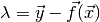 and is the covariance matrix.
is the residual vector 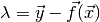 and is the covariance matrix.If a constraint
 is applied to a parameter
is applied to a parameter  ,
a penalty term is added for each constrained parameter:
,
a penalty term is added for each constrained parameter:
Parameters: - xdata (iterable) – The x measurement data
- ydata (iterable) – The y measurement data
- cov_mat (numpy.matrix) – The total covariance matrix
- fit_function (function) – The fit function
- parameter_values (list/tuple) – The values of the parameters at which should be evaluated.
Keyword Arguments: constrain (
Noneor dictionary , optional) – The key of the dictionary holds the parameter ids, while the values are GaussianConstraint objects with values, errors and correlation of the parameters.
-
kafe.fit.round_to_significance(value, error, significance=2)¶ Rounds the error to the established number of significant digits, then rounds the value to the same order of magnitude as the error.
Parameters: - value (float) – value to round to significance
- error (float) – uncertainty of the value
Keyword Arguments: significance (int, optional) – number of significant digits of the error to consider
Plot: Graphical representation of a Fit (kafe.plot)¶
-
class
kafe.plot.Plot(*fits, **kwargs)¶ Bases:
objectThe constuctor accepts a series of Fit objects as positional arguments. Some keyword arguments can be provided to override the defaults.
-
axis_labels= None¶ axis labels
-
compute_plot_range(include_error_bars=True)¶ Compute the span of all child datasets and sets the plot range to that
-
draw_fit_parameters_box(plot_spec=0, force_show_uncertainties=False)¶ Draw the parameter box to the canvas
Parameters: - plot_spec (int, list of ints, string or None (optional, default: 0)) – Specify the plot id of the plot for which to draw the parameters.
Passing 0 will only draw the parameter box for the first plot, and
so on. Passing a list of ints will only draw the parameters for
plot ids inside the list. Passing
'all'will print parameters for all plots. PassingNonewill return immediately doing nothing. - force_show_uncertainties (boolean (optional, default: False)) – If
True, shows uncertainties even for Datasets without error data. Note that in that case these values are meaningless!
- plot_spec (int, list of ints, string or None (optional, default: 0)) – Specify the plot id of the plot for which to draw the parameters.
Passing 0 will only draw the parameter box for the first plot, and
so on. Passing a list of ints will only draw the parameters for
plot ids inside the list. Passing
-
draw_legend()¶ Draw the plot legend to the canvas
-
extend_span(axis, new_span)¶ Expand the span of the current plot.
This method extends the current plot span to include new_span
-
fits= None¶ list of
Fitobjects to plot
-
init_plots(**kwargs)¶ Initialize the plots for each fit.
-
on_draw(event)¶ Function to call when a draw event occurs.
-
plot(p_id, show_data=True, show_function=True, show_band=True)¶ Plot the Fit object with the number p_id to its figure.
-
plot_all(show_info_for='all', show_data_for='all', show_function_for='all', show_band_for='meaningful')¶ Plot every Fit object to its figure.
-
plot_range= None¶ plot range
-
plot_style= None¶ plot style
-
save(output_file)¶ Save the Plot to a file.
-
set_axis_scale(axis, scale_type, **kwargs)¶ Set the scale for an axis.
Parameters: - axis (‘’x’’ or ‘’y’‘) – Axis for which to set the scale.
- scale_type (‘’linear’’ or ‘’log’‘) – Type of scale to set for the axis.
Keyword Arguments: - **basex** (int) – Base of the ‘’x’’ axis scale logarithm. Only relevant for log scales.
- **basey** (int) – Base of the ‘’y’’ axis scale logarithm. Only relevant for log scales.
-
show()¶ Show graphics in one or more matplotlib interactive windows.
Note
This shows all figures/plots generated before it is called. Because of the way
matplotlibhandles some plotting parameters (matplotlib.rcParams) these cannot be set individually for each figure before it is displayed. This means that all figures will be shown with the same plot style: that of the Plot object from which show() is called.
-
show_legend= None¶ whether to show the plot legend (
True) or not (False)
-
-
class
kafe.plot.PlotStyle¶ Class for specifying a style for a specific plot. This object stores a progression of marker and line types and colors, as well as preferences relating to point size and label size. These can be overriden by overwriting the instance variables directly. A series of get_... methods are provided which go through these lists cyclically.
-
get_line(idm)¶ Get a specific line type. This runs cyclically through the defined defaults.
-
get_linecolor(idm)¶ Get a specific line color. This runs cyclically through the defined defaults.
-
get_marker(idm)¶ Get a specific marker type. This runs cyclically through the defined defaults.
-
get_markercolor(idm)¶ Get a specific marker color. This runs cyclically through the defined defaults.
-
get_pointsize(idm)¶ Get a specific point size. This runs cyclically through the defined defaults.
-
-
kafe.plot.label_to_latex(label)¶ Generates a simple LaTeX-formatted label from a plain-text label. This treats isolated characters and words beginning with a backslash as mathematical expressions and surround them with $ signs accordingly.
Parameters: label (string) – Plain-text string to convert to LaTeX.
-
kafe.plot.pad_span(span, pad_coeff=1, additional_pad=None)¶ Enlarges the interval span (list of two floats) symmetrically around its center to length pad_coeff. Optionally, an additional_pad argument can be specified. The returned span is then additionally enlarged by that amount.
additional_pad can also be a list of two floats which specifies an asymmetric amount by which to enlarge the span. Note that in this case, positive entries in additional_pad will enlarge the span (move the interval end away from the interval center) and negative amounts will shorten it (move the interval end towards the interval center).
-
kafe.plot.pad_span_log(span, pad_coeff=1, additional_pad=None, base=10)¶
Interfaces to external packages¶
Interface to ROOT’s TMinuit (kafe.minuit)¶
-
kafe.minuit.D_MATRIX_ERROR= {0: 'Error matrix not calculated', 1: 'Error matrix approximate!', 2: 'Error matrix forced positive definite!', 3: 'Error matrix accurate'}¶ Error matrix status codes
-
class
kafe.minuit.Minuit(number_of_parameters, function_to_minimize, parameter_names, start_parameters, parameter_errors, quiet=True, verbose=False)¶ A class for communicating with ROOT’s function minimizer tool Minuit.
-
FCN_wrapper(number_of_parameters, derivatives, f, parameters, internal_flag)¶ This is actually a function called in ROOT and acting as a C wrapper for our FCN, which is implemented in Python.
This function is called by Minuit several times during a fit. It doesn’t return anything but modifies one of its arguments (f). This is ugly, but it’s how ROOT‘s
TMinuitworks. Its argument structure is fixed and determined by Minuit:- number_of_parameters : int
- The number of parameters of the current fit
- derivatives : C array
- If the user chooses to calculate the first derivative of the function inside the FCN, this value should be written here. This interface to Minuit ignores this derivative, however, so calculating this inside the FCN has no effect (yet).
- f : C array
- The desired function value is in f[0] after execution.
- parameters : C array
- A C array of parameters. Is cast to a Python list
- internal_flag : int
- A flag allowing for different behaviour of the function. Can be any integer from 1 (initial run) to 4(normal run). See Minuit‘s specification.
-
fix_parameter(parameter_number)¶ Fix parameter number <parameter_number>.
- parameter_number : int
- Number of the parameter to fix.
-
function_to_minimize= None¶ the actual FCN called in
FCN_wrapper
-
get_chi2_probability(n_deg_of_freedom)¶ Returns the probability that an observed
exceeds
the calculated value of for this fit by chance,
even for a correct model. In other words, returns the probability that
a worse fit of the model to the data exists. If this is a small value
(typically <5%), this means the fit is pretty bad. For values below
this threshold, the model very probably does not fit the data.- n_def_of_freedom : int
- The number of degrees of freedom. This is typically 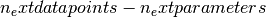.
-
get_contour(parameter1, parameter2, n_points=21)¶ Returns a list of points (2-tuples) representing a sampling of the
 contour of the TMinuit fit. The
contour of the TMinuit fit. The FCNhas to be minimized before calling this.- parameter1 : int
- ID of the parameter to be displayed on the x-axis.
- parameter2 : int
- ID of the parameter to be displayed on the y-axis.
- n_points : int (optional)
- number of points used to draw the contour. Default is 21.
- returns : 2-tuple of tuples
- a 2-tuple (x, y) containing
n_points+1points sampled along the contour. The first point is repeated at the end of the list to generate a closed contour.
-
get_error_matrix()¶ Retrieves the parameter error matrix from TMinuit.
return : numpy.matrix
-
get_fit_info(info)¶ Retrieves other info from Minuit.
- info : string
Information about the fit to retrieve. This can be any of the following:
'fcn': FCN value at minimum,'edm': estimated distance to minimum'err_def': Minuit error matrix status code'status_code': Minuit general status code
-
get_parameter_errors()¶ Retrieves the parameter errors from TMinuit.
- return : tuple
- Current Minuit parameter errors
-
get_parameter_info()¶ Retrieves parameter information from TMinuit.
- return : list of tuples
(parameter_name, parameter_val, parameter_error)
-
get_parameter_name(parameter_nr)¶ Gets the name of parameter number
parameter_nr- parameter_nr : int
- Number of the parameter whose name to get.
-
get_parameter_values()¶ Retrieves the parameter values from TMinuit.
- return : tuple
- Current Minuit parameter values
-
get_profile(parid, n_points=21)¶ Returns a list of points (2-tuples) the profile the
of the TMinuit fit.- parid : int
- ID of the parameter to be displayed on the x-axis.
- n_points : int (optional)
- number of points used for profile. Default is 21.
- returns : two arrays, par. values and corresp.
- containing
n_pointssampled profile points.
-
max_iterations= None¶ maximum number of iterations until
TMinuitgives up
-
minimize(final_fit=True, log_print_level=2)¶ Do the minimization. This calls Minuit‘s algorithms
MIGRADfor minimization and, if final_fit is True, alsoHESSEfor computing/checking the parameter error matrix.
-
minos_errors(log_print_level=1)¶ Get (asymmetric) parameter uncertainties from MINOS algorithm. This calls Minuit‘s algorithms
MINOS, which determines parameter uncertainties using profiling of the chi2 function.- returns : tuple
- A tuple of [err+, err-, parabolic error, global correlation]
-
name= None¶ the name of this minimizer type
-
number_of_parameters= None¶ number of parameters to minimize for
-
release_parameter(parameter_number)¶ Release parameter number <parameter_number>.
- parameter_number : int
- Number of the parameter to release.
-
reset()¶ Execute TMinuit’s mnrset method.
-
set_err(up_value=1.0)¶ Sets the
UPvalue for Minuit.- up_value : float (optional, default: 1.0)
- This is the value by which FCN is expected to change.
-
set_parameter_errors(parameter_errors=None)¶ Sets the fit parameter errors. If parameter_values=`None`, sets the error to 10% of the parameter value.
-
set_parameter_names(parameter_names)¶ Sets the fit parameters. If parameter_values=`None`, tries to infer defaults from the function_to_minimize.
-
set_parameter_values(parameter_values)¶ - Sets the fit parameters. If parameter_values=`None`, tries to infer
- defaults from the function_to_minimize.
-
set_print_level(print_level=1)¶ Sets the print level for Minuit.
- print_level : int (optional, default: 1 (frugal output))
- Tells
TMinuithow much output to generate. The higher this value, the more output it generates.
-
set_strategy(strategy_id=1)¶ Sets the strategy Minuit.
- strategy_id : int (optional, default: 1 (optimized))
- Tells
TMinuitto use a certain strategy. Refer toTMinuit‘s documentation for available strategies.
-
tolerance= None¶ TMinuittolerance
-
update_parameter_data(show_warnings=False)¶ (Re-)Sets the parameter names, values and step size on the C++ side of Minuit.
-
-
kafe.minuit.P_DETAIL_LEVEL= 1¶ default level of detail for TMinuit’s output (typical range: -1 to 3, default: 1)
Interface to iminuit (kafe.iminuit_wrapper)¶
-
kafe.iminuit_wrapper.D_MATRIX_ERROR= {0: 'Error matrix not calculated', 1: 'Error matrix approximate!', 2: 'Error matrix forced positive definite!', 3: 'Error matrix accurate'}¶ Error matrix status codes
-
class
kafe.iminuit_wrapper.IMinuit(number_of_parameters, function_to_minimize, parameter_names, start_parameters, parameter_errors, quiet=True, verbose=False)¶ A wrapper class for iminuit.
-
FCN_wrapper(**kw_parameters)¶ This wrapper converts from the “keyword argument” way of calling the function to a “positional argument” way, taking into account the order of the parameters as they appear in self.parameter_names.
This mapping is done for each call, so it’s quite resource intensive, but this is unavoidable, since external FCNs to minimize expect positional arguments.
- kw_parameters : dict
- Map of parameter name to parameter value.
-
errordef= None¶ iminuiterrordef
-
fix_parameter(parameter)¶ Fix parameter <parameter>.
- parameter : string
- Name of the parameter to fix.
-
function_to_minimize= None¶ the actual FCN called in
FCN_wrapper
-
get_chi2_probability(n_deg_of_freedom)¶ Returns the probability that an observed
exceeds
the calculated value of for this fit by chance,
even for a correct model. In other words, returns the probability that
a worse fit of the model to the data exists. If this is a small value
(typically <5%), this means the fit is pretty bad. For values below
this threshold, the model very probably does not fit the data.- n_def_of_freedom : int
- The number of degrees of freedom. This is typically .
-
get_contour(parameter1, parameter2, n_points=21)¶ Returns a list of points (2-tuples) representing a sampling of the
contour of the iminuit fit. The FCNhas to be minimized before calling this.- parameter1 : int
- ID of the parameter to be displayed on the x-axis.
- parameter2 : int
- ID of the parameter to be displayed on the y-axis.
- n_points : int (optional)
- number of points used to draw the contour. Default is 21.
- returns : 2-tuple of tuples
- a 2-tuple (x, y) containing
n_points+1points sampled along the contour. The first point is repeated at the end of the list to generate a closed contour.
-
get_error_matrix(correlation=False)¶ Retrieves the parameter error matrix from iminuit.
- correlation : boolean (optional, default
False) - If
True, return correlation matrix, else return covariance matrix.
return : numpy.matrix
- correlation : boolean (optional, default
-
get_fit_info(info)¶ Retrieves other info from Minuit.
- info : string
Information about the fit to retrieve. This can be any of the following:
'fcn': FCN value at minimum,'edm': estimated distance to minimum'err_def': Minuit error matrix status code'status_code': Minuit general status code
-
get_parameter_errors()¶ Retrieves the parameter errors from iminuit.
- return : tuple
- Current Minuit parameter errors
-
get_parameter_info()¶ Retrieves parameter information from iminuit.
- return : list of tuples
(parameter_name, parameter_val, parameter_error)
-
get_parameter_name(parameter_nr)¶ Gets the name of parameter number
parameter_nr- parameter_nr : int
- Number of the parameter whose name to get.
-
get_parameter_values()¶ Retrieves the parameter values from iminuit.
- return : tuple
- Current Minuit parameter values
-
get_profile(parameter, n_points=21)¶ Returns a list of points (2-tuples) the profile the
of the iminuit fit.- parid : int
- ID of the parameter to be displayed on the x-axis.
- n_points : int (optional)
- number of points used for profile. Default is 21.
- returns : two arrays, par. values and corresp.
- containing
n_pointssampled profile points.
-
max_iterations= None¶ maximum number of iterations until
iminuitgives up
-
minimize(final_fit=True, log_print_level=2)¶ Do the minimization. This calls Minuit‘s algorithms
MIGRADfor minimization and, if final_fit is True, alsoHESSEfor computing/checking the parameter error matrix.
-
minos_errors(log_print_level=1)¶ Get (asymmetric) parameter uncertainties from MINOS algorithm. This calls Minuit‘s algorithms
MINOS, which determines parameter uncertainties using profiling of the chi2 function.- returns : tuple
- A tuple of (err+, err-, parabolic error, global correlation)
-
name= None¶ the name of this minimizer type
-
number_of_parameters= None¶ number of parameters to minimize for
-
release_parameter(parameter)¶ Release parameter <parameter>.
- parameter : string
- Name of the parameter to release.
-
reset()¶ Resets iminuit by re-creating the minimizer.
-
set_err(up_value=1.0)¶ Sets the
UPvalue for Minuit.- up_value : float (optional, default: 1.0)
- This is the value by which FCN is expected to change.
-
set_parameter_errors(parameter_errors=None, update_iminuit=True)¶ Sets the fit parameter errors. If parameter_values=`None`, sets the error to 10% of the parameter value.
-
set_parameter_names(parameter_names, update_iminuit=True)¶ Sets the fit parameter names.
-
set_parameter_values(parameter_values, update_iminuit=True)¶ - Sets the fit parameters. If parameter_values=`None`, tries to infer
- defaults from the function_to_minimize.
-
set_print_level(print_level=1)¶ Sets the print level for Minuit.
- print_level : int (optional, default: 1 (frugal output))
- Tells
iminuithow much output to generate. The higher this value, the more output it generates.
-
set_strategy(strategy_id=1)¶ Sets the strategy Minuit.
- strategy_id : int (optional, default: 1 (optimized))
- Tells
iminuitto use a certain strategy. Refer toiminuit‘s documentation for available strategies.
-
set_tolerance(tol)¶ Sets the tolerance value for Minuit.
- tol : float
- The tolerance
-
update_parameter_data(show_warnings=False)¶ (Re-)Sets the parameter names, values and step size in iminuit.
-
-
kafe.iminuit_wrapper.P_DETAIL_LEVEL= 1¶ default level of detail for iminuit’s output (typical range: -1 to 3, default: 1)
kafe configuration¶
kafe configuration (kafe.config)¶
-
kafe.config.create_config_file(config_type, force=False)¶ Create a kafe config file.
- config_type : ‘user’ or ‘local’
- Create a ‘user’ config file in ‘~/.config/kafe’ or a ‘local’ one in the current directory.
- force : boolean (optional)
- If true, overwrites existing files.
-
kafe.config.log_file(file_relative_path)¶ Returns correct location for placing log files.
Modules with helper tools¶
For building datasets (kafe.dataset_tools)¶
-
kafe.dataset_tools.build_dataset(xdata, ydata, cov_mats=None, xabserr=0.0, xrelerr=0.0, xabscor=0.0, xrelcor=0.0, yabserr=0.0, yrelerr=0.0, yabscor=0.0, yrelcor=0.0, title=None, axis_labels=None, axis_units=None, **kwargs)¶ This helper function creates a Dataset from a series of keyword arguments.
Parameters: - xdata (list/tuple/np.array of floats) – This keyword argument is mandatory and should be an iterable containing x-axis the measurement data.
- ydata (list/tuple/np.array of floats) – This keyword argument is mandatory and should be an iterable containing y-axis the measurement data.
- cov_mats (
Noneor 2-tuple, optional) –This argument defaults to
None, which means no covariance matrices are used. If covariance matrices are needed, a tuple with two entries (the first for x covariance matrices, the second for y) must be passed.Each element of this tuple may be either
Noneor a NumPy matrix object containing a covariance matrix for the respective axis.
Keyword Arguments: error specification keywords (iterable or numeric (see below)) – In addition to covariance matrices, errors can be specified for each axis (x or y) according to a simplified error model.
In this respect, a valid keyword is composed of an axis, an error relativity specification (abs or rel) and error correlation type (err or cor). The errors are then set as follows:
- For totally uncorrelated errors (err):
- if keyword argument is iterable, the error list is set to that
- if keyword argument is a number, an error list with identical entries is generated
- For fully correlated errors (cor):
- keyword argument must be a single number. The global correlated error for the axis is then set to that.
So, for example:
>>> my_dataset = build_dataset(..., yabserr=0.3, yrelcor=0.1)
creates a Dataset with an uncorrelated error of 0.3 for each y coordinate and a fully correlated (systematic) error of y of 0.1.
title (string, optional) – The title of the Dataset.
axis_labels (2-tuple of strings, optional) – a 2-tuple containing the axis labels for the Dataset. This is relevant when plotting Fits of the Dataset, but is ignored when plotting more than one Fit in the same Plot.
axis_units (2-tuple of strings, optional) – a 2-tuple containing the axis units for the Dataset. This is relevant when plotting Fits of the Dataset, but is ignored when plotting more than one Fit in the same Plot.
Returns: Dataset object constructed from data and error information
Return type:
For parsing files (kafe.file_tools)¶
-
kafe.file_tools.buildDataset_fromFile(file_to_parse)¶ Build a kafe
Datasetobject from input file with key words and file format defined inparse_general_inputfile()Parameters: file_to_parse (file-like object or string containing a file path) – The file to parse. Returns: a Datasetobject constructed with the help of the methodkafe.dataset.Dataset.build_dataset()Return type: py:class:~kafe.dataset.Dataset
-
kafe.file_tools.buildFit_fromFile(file_to_parse)¶ Build a kafe
Fitobject from input file with keywords and file format defined inparse_general_inputfile()Parameters: file_to_parse (file-like object or string containing a file path) – The file to parse. Returns: a Fitobject constructed with the help of the methodsbuild_dataset()andbuild_fit()Return type: py:class:~kafe.fit.Fit
-
kafe.file_tools.parse_column_data(file_to_parse, field_order='x,y', delimiter=' ', cov_mat_files=None, title='Untitled Dataset', basename=None, axis_labels=['x', 'y'], axis_units=['', ''])¶ Parses a file which contains measurement data in a one-measurement-per-row format. The field (column) order can be specified. It defaults to
"x,y". Valid field names are x, y, xabserr, yabserr, xrelerr, yrelerr. Another valid field name is ignore which can be used to skip a field.A certain type of field can appear several times. If this is the case, all specified errors are added in quadrature:
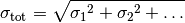
Every valid measurement data file must have an x and a y field.
For more complex error models, errors and correlations may be specified as covariance matrices. If this is desired, then any number of covariance matrices (stored in separate files) may be specified for an axis by using the cov_mat_files argument.
Additionally, a delimiter can be specified. If this is a whitespace character or omitted, any sequence of whitespace characters is assumed to separate the data.
Parameters: - file_to_parse (file-like object or string containing a file path) – The file to parse.
- field_order (string, optional) – A string of comma-separated field names giving the order of the columns
in the file. Defaults to
'x,y'. - delimiter (string, optional) – The field delimiter used in the file. Defaults to any whitespace.
- cov_mat_files (several (see below), optional) –
This argument defaults to
None, which means no covariance matrices are used. If covariance matrices are needed, a tuple with two entries (the first for x covariance matrices, the second for y) must be passed.Each element of this tuple may be either
None, a file or file-like object, or an iterable containing files and file-like objects. Each file should contain a covariance matrix for the respective axis.When creating the
Dataset, all given matrices are summed over. - title (string, optional) – The title of the
Dataset. - basename (string or
None, optional) – A basename for theDataset. All output files related to this dataset will use this as a basename. If this isNone(default), the basename will be inferred from the filename. - axis_labels (2-tuple of strings, optional) – a 2-tuple containing the axis labels for the
Dataset. This is relevant when plottingFitsof theDataset, but is ignored when plotting more than oneFitin the samePlot. - axis_units (2-tuple of strings, optional) – a 2-tuple containing the axis units for the
Dataset. This is relevant when plottingFitsof theDataset, but is ignored when plotting more than oneFitin the samePlot.
Returns: A Dataset built from the parsed file.
Return type:
-
kafe.file_tools.parse_general_inputfile(file_to_parse)¶ This function can be used to specify kafe
DatasetorFitobjects in a single input file, thus requiring minimal Python code. Keywords as specified in a dictionarytokensspecify all objects and parameters needed by the functionsbuild_dataset()in moduledatasetandbuild_fit()in modulefit.Parameters: file_to_parse (file-like object or string containing a file path) – The file to parse. Returns: keyword lists to build a kafe DatasetorFitobject with the helper functions build_dataset or build_fitReturn type: (dataset_kwargs, fit_kwargs) Input file format
The interpretation of the input data is driven by keywords. All data following a key must be of the same kind. A block of data ends when a new key is specified. Comments can be introduced by
#.Some keys only expect a single float or string-type value, given on the same line, separated by a space (
' '):<key> <value>
Other keys require multiple lines of input. For instance, the keys
*xDataand*yDataexpect the following lines to be a table where the first column corresponds to the data values and the second column corresponds to the uncertainties:<key> <value1> <uncertainty1> <value2> <uncertainty2> ... <valueN> <uncertaintyN>
The column separator is space (
' '). For more details about input data specification, see below.Specifying metadata
Key Description *TITLEname of the dataset *BASENAMEname from which output file names is derived *FITLABELfit label *xLabelx axis label *xUnitx axis unit *yLabely axis label *yUnity axis unit The fit label may be set using the key
*FITLABEL, followed by the desired name for the fit.Specifying input data
Input data are given as a list of values (one datapoint per row). For a simple uncertainty model (no correlations), the keys
*xDataand*yDataare used. The second column indicates the uncertainty of the measurement:*xData 1.2 3.4 6.9 *yData 2.1 0.2 3.9 0.3 8.2 0.5
Note
Uncertainties always have to be specified for
*yData. For*xData, they are optional.For input data with correlated uncertainties, the alternative keys
*xData_CORand*yData_CORare provided. For these, additional columns must be given. The second and third column indicate the uncorrelated and correlated uncertainties, respectively. The subequent columns contain the correlation matrix (a lower triangular matrix containing the correlation coefficients):*yData_COR # value indep.uncert. syst.uncert. elements of corr. matrix. 2.1 0.2 0.1 3.9 0.3 0.2 1.0 8.2 0.5 0.3 1.0 1.0
Note
Only elements below the main diagonal of the correlation matrix have to be specified. Since the matrix is symmetric by construction, the elements above the main diagonal can be inferred from those below. Additionally, since the diagonal elements of a correlation matrix are always equal to 1 by definition, they are also omitted.
As an alternative to specifying the correlation matrix, the covariance matrix may be specified directly. There are two ways to do this:
The keys
*xData_SCOVand*yData_SCOVallow specifying the covariance matrix by providing a correlated uncertainty (third column) and the square root of the elements below the main diagonal. This is useful if the pairwise covariance of two measurements cannot be expressed using the correlation coefficient and needs to be provided explicitly.In the example below, there is a correlation between the first two and the last two measurements, which is estimated under the assumption that the smaller of the two uncertainties represents a common error:
*yData_SCOV # mH err syst sqrt(cov) 124.51 0.52 0.06 125.60 0.40 0.20 0.06 125.98 0.42 0.28 0. 0. 124.70 0.31 0.15 0. 0. 0.15
A second possibility is specifying the full covariance matrix directly. This is achieved using the
*xData_COVand*yData_COVkeywords. In this case, only the data values and the uncorrelated uncertainties (first and second columns, respectively) must be specified in addition to the covariance matrix (all other columns). All entries starting with the third column are assumed to be covariance matrix elements. The matrix is symmetric, so elements above the diagonal are omitted. Note that the diagonal must be specified and corresponds to the squares of the correlated errors:*yData_COV # mH err cov_ij 124.51 0.52 0.0036 125.60 0.40 0.0036 0.04 125.98 0.42 0. 0. 0.0784 124.70 0.31 0. 0. 0.0225 0.0225
Specifying additional uncertainties
In addition to the uncertainties already specified in the input data table, other systematic uncertainties may be provided. These are assumed be fully correlated and common to all data points. This can be achieved by using the following keys:
Key Description *xAbsCorcommon fully correlated x-uncertainty (absolute) *yAbsCorcommon fully correlated y-uncertainty (absolute) *xRelCorcommon fully correlated x-uncertainty (relative) *yRelCorcommon fully correlated y-uncertainty (relative) Specifying a fit function
To specify the fit function, the key
*FitFunctionis provided. This key should be followed by Python code:def fitf(x, ...): ... return ...
Note
Only one Python function may be defined after the
*FitFunctionkeyword. Also, any function name can be used instead offitf.Additionally, the decorators
@ASCII,@LaTeXand@FitFunctionare supported (seeASCII,LaTeXandFitFunction)Specifying initial values for parameters
Initial values for fit parameters may be set using the keyword
*InitialParameters. This keyword expects to be followed by a table with two columns containing floating-point values.Each line in the table corresponds to one fit parameter, in the order they are given in the fit function signature. The first column should contain the initial value of the parameters and the second column the “initial uncertainty”, which controls the initial variation range of the parameter at the beginning of the fit:
*InitialParameters <initial value par 1> <initial uncert par 1> <initial value par 2> <initial uncert par 2> ... <initial value par N> <initial uncert par N>
Constraining parameters
If there is any prior knowledge about model parameters’ values on uncertainties, these may be constrained during the fit.
During the fit, model parameters can be constrained within their uncertainties if there is any prior knowledge about their values and uncertainties.
This may be specified using the keyword
*ConstrainedParameters, followed by a table containing the parameter name, value and uncertainty for each parameter to be constrained:<parameter name> <parameter value> <parameter uncert.>,
Note
The parameter name must be the one specified in the fit function definition.
Example
Here is an example of an input file to calculate the average of four partly correlated measurements (see Example 8):
# Meta data for plotting *TITLE Higgs-mass measurements *xLabel number of measurement *yLabel $m_\mathrm{H}$ *yUnit GeV/$c^2$ #*xData # commented out, as not needed for simple average *yData_SCOV # assume that minimum of syst. errors is a common error # mH err syst as sqrt(cov) 124.51 0.52 0.06 125.60 0.40 0.20 0.06 125.98 0.42 0.28 0. 0. 124.70 0.31 0.15 0. 0. 0.15 *FitFunction # Python code of fit function # kafe fit function decorators are supported @ASCII(expression='av') @LaTeX(name='f', parameter_names=('av'), expression='av') @FitFunction def fitf(x, av=1.0): # fit an average return av *FITLABEL Average *InitialParameters 120. 1.
For specifying and decorating fit functions (kafe.function_tools)¶
-
kafe.function_tools.ASCII(**kwargs)¶ Optional decorator for fit functions. This overrides a FitFunction’s plain-text (ASCII) attributes. The new values for these attributes must be passed as keyword arguments to the decorator. Possible arguments:
- name : string
- Plain-text representation of the function name.
- parameter_names : list of strings
- List of plain-text representations of the function’s arguments. The length of this list must be equal to the function’s argument number. The argument names should be in the same order as in the function definition.
- x_name : string
- Plain-text representation of the independent variable’s name.
- expression : string
- Plain-text-formatted expression representing the function’s formula.
-
class
kafe.function_tools.FitFunction(f)¶ Decorator class for fit functions. If a function definition is decorated using this class, some information is collected about the function which is relevant to the fitting process, such as the number of parameters, their names and default values. Some details pertaining to display and representation are also set, such as
representations of
the parameter names and the function name. Other decorators can be applied
to a function object to specify things such as a or
plain-text expression for the fit function.-
derive_by_parameters(x_0, precision_spec, parameter_list)¶ Returns the gradient of func with respect to its parameters, i.e. with respect to every variable of func except the first one.
- precision_spec :
floator iterable offloats - An array of floats indicating the initial point spacing for numerically evaluating the derivative. Can be a single float value to use the same spacing for every derivation.
- precision_spec :
-
derive_by_x(x_0, precision_list, parameter_list)¶ If x_0 is iterable, gives the array of derivatives of a function
 around 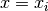 at every
around 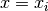 at every
 in
in  . If x_0 is not iterable, gives the
derivative of a function around
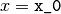.
. If x_0 is not iterable, gives the
derivative of a function around
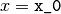.
-
evaluate(x_0, parameter_list)¶ Evaluate the fit function at an x-value or at an array of x-values for the parameter values in prarameter_list.
x_0 float or array of floats
parameter_list values of function parameters
returns function value(s)
-
expression= None¶ a math expression (string) representing the function’s result
-
get_function_equation(equation_format='latex', equation_type='full', ensuremath=True)¶ Returns a string representing the function equation. Supported formats are
and ASCII inline math. Note that
math is wrapped by default in an \ensuremath{}expression. If this is not desired behaviour, the flagensuremathcan be set toFalse.- equation_format : string (optional)
- Can be either “latex” (default) or “ascii”.
- equation_type : string (optional)
Can be either “full” (default), “short” or “name”. A “name”-type equation returns a representation of the function name:
fA “short”-type equation limits itself to the function name and variables:
f(x, par1, par2)
A “full”-type equation includes the expression which the function calculates:
f(x, par1, par2) = par1 * x + par2
- ensuremath : boolean (optional)
- If a math equation is requested,
True(default) will wrap the resulting expression in an\ensuremath{}tag. Otherwise, no wrapping is done.
-
latex_expression= None¶ a
math expression, the function’s result
-
latex_name= None¶ The function’s name in
-
latex_parameter_names= None¶ A list of parameter names in
-
latex_x_name= None¶ A
symbol for the independent variable.
-
name= None¶ The name of the function
-
number_of_parameters= None¶ The number of parameters
-
parameter_defaults= None¶ The default values of the parameters
-
parameter_names= None¶ The names of the parameters
-
x_name= None¶ The name given to the independent variable
-
-
kafe.function_tools.LaTeX(**kwargs)¶ Optional decorator for fit functions. This overrides a FitFunction’s latex_ attributes. The new values for the latex_ attributes must be passed as keyword arguments to the decorator. Possible arguments:
- name : string
- representation of the function name.
- parameter_names : list of strings
- List of representations of the function’s arguments.
The length of this list must be equal to the function’s argument
number. The argument names should be in the same order as in the
function definition.
- x_name : string
- representation of the independent variable’s name.
- expression : string
- -formatted expression representing the
function’s formula.
-
kafe.function_tools.derivative(func, derive_by_index, variables_tuple, derivative_spacing)¶ Gives 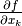 for
 . func is
. func is  , variables_tuple is
, variables_tuple is  and
derive_by_index is
and
derive_by_index is  .
.
-
kafe.function_tools.outer_product(input_array)¶ Takes a NumPy array and returns the outer (dyadic, Kronecker) product with itself. If input_array is a vector
 , this returns
, this returns
 .
.
For working with LaTeX strings (kafe.latex_tools)¶
-
kafe.latex_tools.ascii_to_latex_math(str_ascii, monospace=True, ensuremath=True)¶ Escapes certain characters in an ASCII input string so that the result can be included in math mode without error.
- str_ascii : string
- A plain-text string containing characters to be escaped for
math mode.
- monospace : boolean (optional)
- Whether to render the whole expression as monospace. Defaults to
True. - ensuremath : boolean (optional)
- If this is
True, the resulting formula is wrapped in an\ensuremath{}tag. Defaults toTrue.
For routine numeric tasks (kafe.numeric_tools)¶
-
kafe.numeric_tools.MinuitCov_to_cor(cov_mat)¶ Converts a covariance matrix as returned by Minuit to the corresponding correlation matrix; note that the Minuit covariance matrix may contain lines/rows with zeroes if parameters are fixed
- cov_mat : numpy.matrix
- The Minuit covariance matrix to convert.
-
kafe.numeric_tools.cor_to_cov(cor_mat, error_list)¶ Converts a correlation matrix to a covariance matrix according to the formula
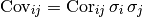
- cor_mat : numpy.matrix
- The correlation matrix to convert.
- error_list : sequence of floats
- A sequence of statistical errors. Must be of the same length as the diagonal of cor_mat.
-
kafe.numeric_tools.cov_to_cor(cov_mat)¶ Converts a covariance matrix to a correlation matrix according to the formula
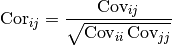
- cov_mat : numpy.matrix
- The covariance matrix to convert.
-
kafe.numeric_tools.extract_statistical_errors(cov_mat)¶ Extracts the statistical errors from a covariance matrix. This means it returns the (elementwise) square root of the diagonal entries
- cov_mat
- The covariance matrix to extract errors from. Type: numpy.matrix
-
kafe.numeric_tools.make_symmetric_lower(mat)¶ Copies the matrix entries below the main diagonal to the upper triangle half of the matrix. Leaves the diagonal unchanged. Returns a NumPy matrix object.
- mat : numpy.matrix
- A lower diagonal matrix.
- returns : numpy.matrix
- The lower triangle matrix.
-
kafe.numeric_tools.zero_pad_lower_triangle(triangle_list)¶ Converts a list of lists into a lower triangle matrix. The list members should be lists of increasing length from 1 to N, N being the dimension of the resulting lower triangle matrix. Returns a NumPy matrix object.
For example:
>>> zero_pad_lower_triangle([ [1.0], [0.2, 1.0], [0.01, 0.4, 3.0] ]) matrix([[ 1. , 0. , 0. ], [ 0.2 , 1. , 0. ], [ 0.01, 0.4 , 3. ]])
- triangle_list : list
- A list containing lists of increasing length.
- returns : numpy.matrix
- The lower triangle matrix.
Auxilliary modules¶
Collection of ready-to-use fit functions (kafe.function_library)¶
Collection of model functions
File/stream manipulation (kafe.stream)¶
-
class
kafe.stream.StreamDup(out_file, suppress_stdout=False)¶ Bases:
objectObject for simultaneous logging to stdout and files. This object provides a file/like object for the outout to be written to. Writing to this object will write to stdout (usually the console) and to a file.
- out_file : file path or file-like object or list of file paths ...
- File(s) to which to log the output, along with stdout. If a file exists on disk, it will be appended to.
- suppress_stdout : boolean
- Whether to log to stdout simultaneously (
False) or suppress output to stdout (True). Default toFalse.
-
fileno()¶ Returns the file handler id of the main (first) output file.
-
flush()¶
-
write(message)¶
-
write_timestamp(prefix)¶
-
write_to_file(message)¶
-
write_to_stdout(message, check_if_suppressed=False)¶ Explicitly write to stdout. This method will not check by default whether
suppress_stdoutis set for this StreamDup. Ifcheck_if_suppressedis explicitly set toTrue, then this check occurs.